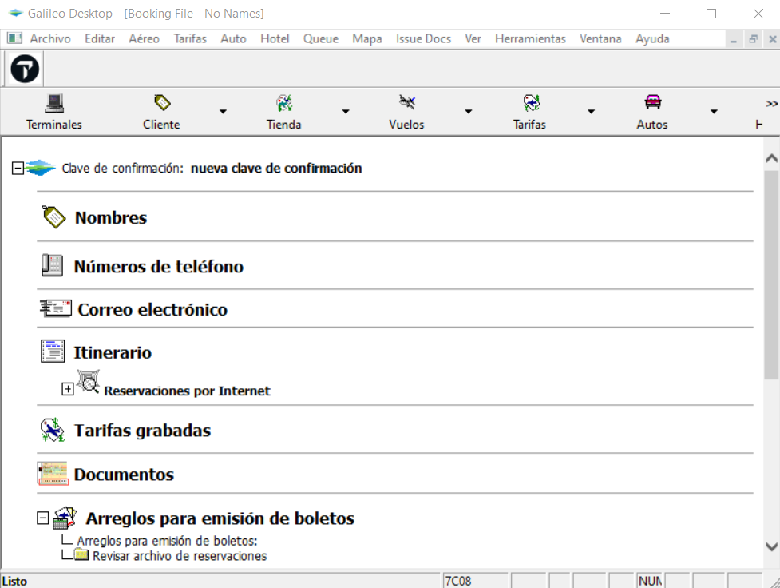
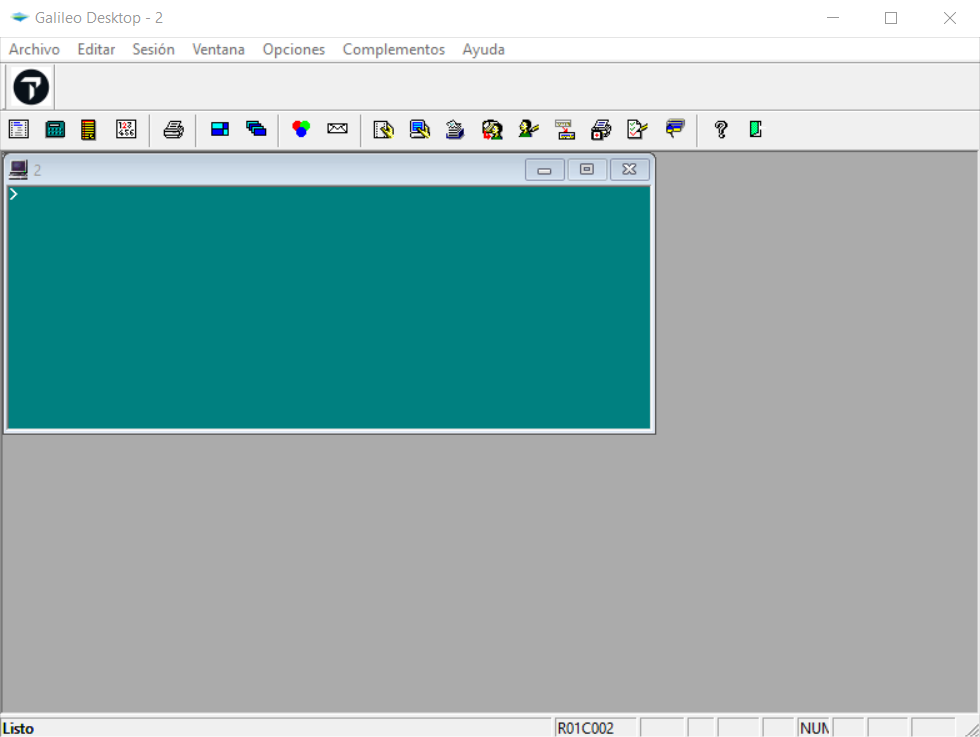
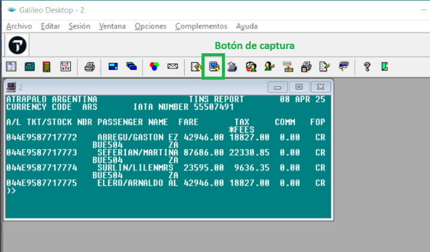
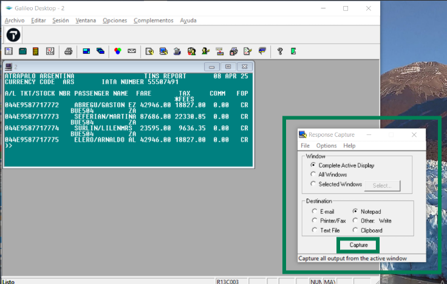
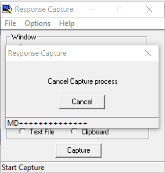
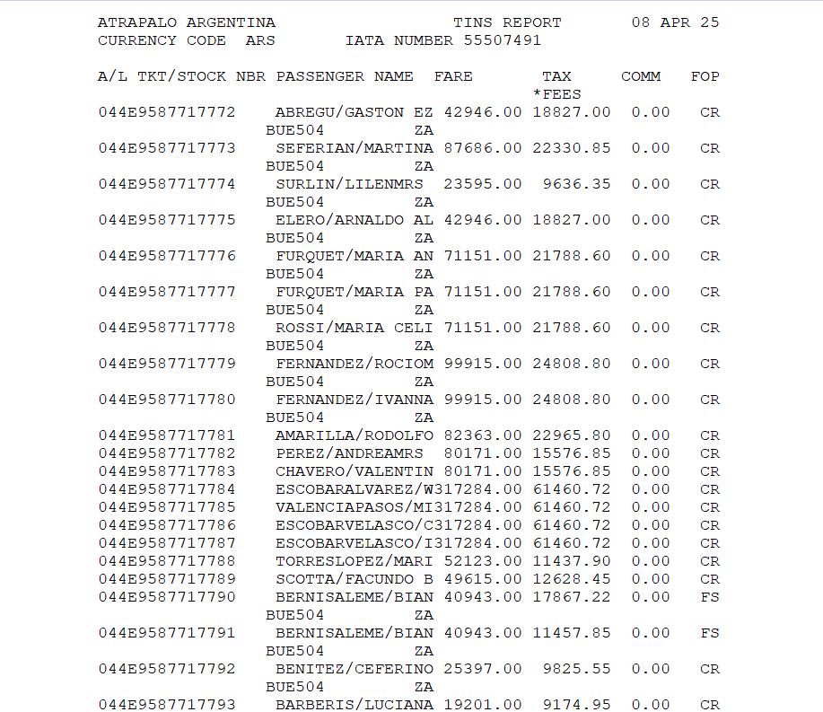
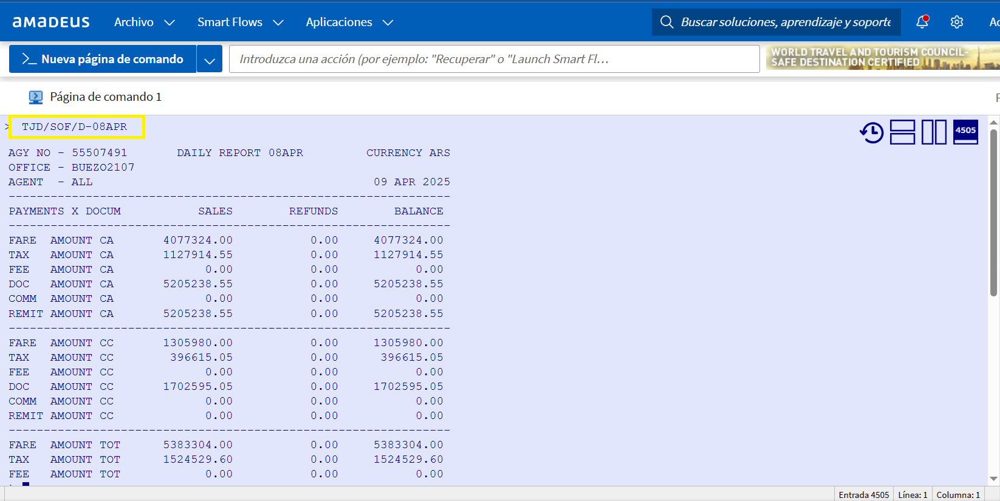
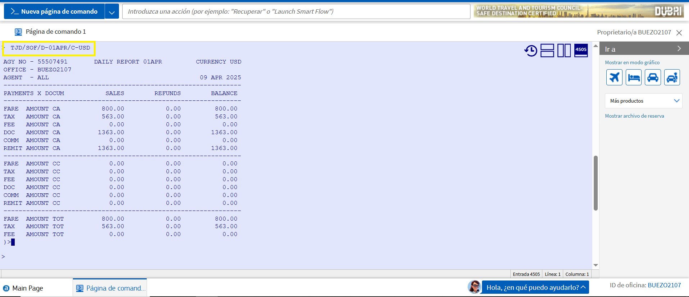

🏁 Tareas de Cierre
Es responsabilidad del agente asegurar que no queden pendientes críticos sin informar antes de desconectarse.
- Auditoría: Comparar planilla personal de emisiones contra el Admin.
- Tagueo: Asegurar que todos los casos en Admin tengan su Tag de gestión.
- Handover: Informar por Slack/Mail casos que requieran seguimiento urgente.
📊 Reportes en Galileo (Smartpoint)
Sigue el flujo visual para capturar la emisión del día:
1. Desde la pantalla críptica, ingresa a una de las ventanas del panel:


2. Ejecuta el comando según la moneda de las emisiones:
USD: HMPR/CU-USD/DDMMM
3. Captura la información usando el botón de la barra superior y descarga el archivo:


4. Presiona "Capturar" y el sistema generará un archivo de texto (.txt) automático:


🖥️ Reportes en Amadeus
1. En la página de comandos, utiliza la instrucción de cierre:
USD: TJD/SOF/D-Fechadecierre/C-USD

2. Amadeus no permite descarga directa. Debes copiar el texto manualmente y guardarlo en un bloc de notas.

📧 Finalización y Envío
Unifica los reportes de Galileo y Amadeus en un solo correo electrónico.
Destinatarios:
- martin.romano@atrapalo.com.ar
- tomas.devescovi@atrapalo.com.ar
- barbara.diaz@atrapalo.com.ar
- walter.pucci@atrapalo.com.ar
- lisseth.chavez@atrapalo.pe
- javier.donner@atrapalo.cl